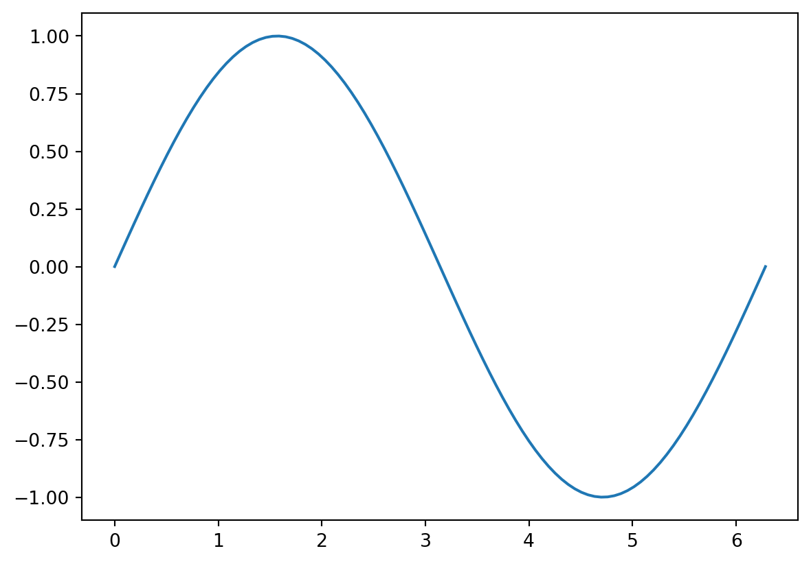
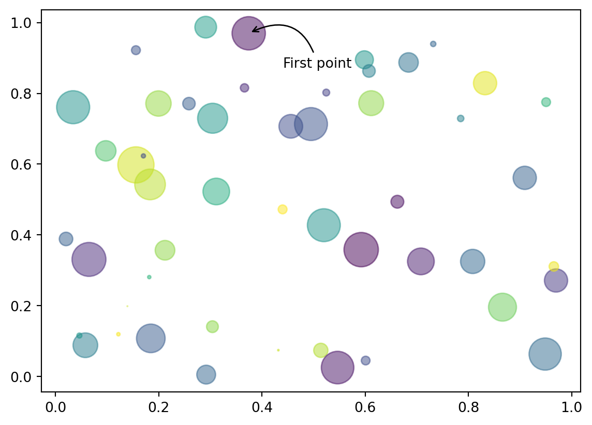

print("Hello World!")
print("hello \n World!") #save this script as a hello.py fileHello World!
hello
World!Economist widely used STATA for the last 30 years to analyse economic data. Whether they are researching school selection, minimum wage, GDP, or stock trends, Stata provides all the statistics, graphics, and data-management tools needed to pursue a broad range of economic questions.
Python is a widely used general-purpose, high-level programming language. Its design philosophy emphasizes code readability, and its syntax allows programmers to express concepts in fewer lines of code than would be possible in languages such as C++ or Java. The language provides constructs intended to enable clear programs on both a small and large scale.
The core philosophy of the language is summarized by the document “PEP 20 (The Zen of Python)” as:
Python is compact and readable. Programs written in Python are typically much shorter than equivalent C, C++, or Java programs. Python is extensible: if you know how to program in C, it is easy to add a new built-in function or module to the interpreter, either to perform critical operations at maximum speed.
The language is named after the BBC show Monty Python’s Flying Circus (1969-1974) and has nothing to do with reptiles.
Python has a large standard library, commonly cited as one of Python’s greatest strengths, providing tools suited to many tasks.Python within an application.Python software, contains over 350,000 packages with a wide range of functionality.This is a short introduction to Python for course of data science for economists. Topics that will not be discussed in this course are:
Python data science and machine learning on a single machine.let’s start with the most basic code humans ever made:
print("Hello World!")
print("hello \n World!") #save this script as a hello.py fileHello World!
hello
World!to run a python file in CMD type the following (But remember our Git/Shell class):
$python hello.pyBravoPython program.
5+51010-5525/55.0(1+4)*630x = 2024
print(x)
y = "I love Pizza"
print(y)2024
I love Pizzacomment is made with the #. Python ignores everything in a line that follows a #. let’s practice making comments
i = 26 #Assigned the value 26 to variable i
j = 13
# we can add them
i+j
j-i
i/j2.0Python can also manipulate strings, which can be expressed in several ways. They can be enclosed in single quotes (‘…’) or double quotes (“…”) with the same result.
FirstName = " Ahmed" #leave 1 space to make it fancy
LastName = "Osman"
FullName = LastName + FirstName
print(FirstName)
print(LastName)
print(FullName) Ahmed
Osman
Osman Ahmedlen() is a builtin function in python that returns the length of string.
print(len(FullName))11Two or more string literals (i.e. the ones enclosed between quotes) next to each other are automatically concatenated. This feature is particularly useful when you want to break long strings:
"Ahmed" " Osman"'Ahmed Osman'Or add letters to form a word like the following:
"A"+"h"+"m"+"e"+"d"'Ahmed'Python includes various compound data types for grouping together other values. Among these, the list stands out as the most flexible. It is represented by square brackets enclosing comma-separated values (items). Lists can comprise items of varying types, although typically, items within a list share the same type.
values = [1,5,7,9,12]
print(values)
print(len(values))
print(values[0]) #remember [[]] case of R[1, 5, 7, 9, 12]
5
1Lists are a mutable type, i.e. it is possible to change their content:
values[2]=100
values[1, 5, 100, 9, 12]You can also add new items at the end of the list, by using the append() method
values.append(15)
values[1, 5, 100, 9, 12, 15]The Python interpreter incorporates a variety of built-in functions that are consistently accessible. These functions are presented here in alphabetical order. You can use the help() function, for example help(abs), to access detailed information about a specific function.
'abs() aiter() all() any() anext() ascii() bin() bool() breakpoint() bytearray() bytes() callable() chr() classmethod() compile() complex() delattr() dict() dir() divmod() enumerate() eval() exec() filter() float() format() frozenset() getattr() globals() hasattr() hash() help() hex() id() input() int() isinstance() issubclass() iter() len() list() locals() map() max() memoryview() min() next() object() oct() open() ord() pow() print() property() range() repr() reversed() round() set() setattr() slice() sorted() staticmethod() str() sum() super() tuple() type() vars() zip() __import__()'docstring
# 0, 1, 1, 2, 3, 5,
def fib(n): # write Fibonacci series up to n
"""Print a Fibonacci series up to n.
par n: integer
out : list
""" # the function help
a, b = 0, 1
while a < n:
print(a, end=' ')
# better than print(a), why?
a, b = b, a+bhelp(fib)Help on function fib in module __main__:
fib(n)
Print a Fibonacci series up to n.
par n: integer
out : list
fib(4)0 1 1 2 3 Generally Functions are structured like:
def function_name(inputs):
# step 1
# step 2
# ...
return outputsdef mean(numbers):
total = sum(numbers)
N = len(numbers)
answer = total / N
return answer
x = [1,2,3,4,5,6]
print(mean(x))3.5If we save the function to a file named mycollections.py, we could import the function as follows:
import mycollections
mycollections.fib(200)
from mycollections import fib
fib(2)0 1 1 2 3 5 8 13 21 34 55 89 144 0 1 1 Production functions are valuable tools for representing the economic activities of firms generating goods or the total output within an economy. Despite using the term “function” in a mathematical context, we will closely link the conceptualization of mathematical functions with the implementation of Python functions. \[ Y=F(K,L) \]
Cobb-Douglas production functions can help us understand how to create Python functions and why they are useful.
\[ Y=zK^\alpha L^{1-\alpha} \]
The function is parameterized by:
Now let’s define the Cobb-Douglas function which computes the output production with parameters \(z\)=1 and \(\alpha\)=0.33 and takes the input \(K\) and \(L\):
def cobb_douglas(K,L):
#create alpha and z
z=1
alpha=0.33
return z*K**alpha*L**(1-alpha)Now we can use this function and do the computations as fellow:
cobb_douglas(1.0,0.5)0.6285066872609142Now, Your turn: Define a function that compares two Cobb-Douglas functions and returns the ratio between the two production functions.
\[ Y_2=F(K_2,L_2)=F(\gamma K_1,\gamma L_1) \]
Hint : Use the same function to calculate all the functions.
Solution:
def ratio_CD (K, L, gamma):
y1 = cobb_douglas(K,L)
y2 = cobb_douglas(gamma*K,gamma*L)
y_ratio = y2/y1
return y_ratio/gamma
print(ratio_CD(1,0.5,2))1.0Types in Iterations in Python:
Before jumping into iteration let’s see how the if statements are computes in Python.
# if condition
# code to run when condition is True
#else
# code to run if no conditions above are True
#return or print somethin
if (1<2) is True:
print(" 1 is less than 2") 1 is less than 2Suppose we wanted to print out the first 10 integers and their squares. we could do somethings like this.
print(f"1**2={1**2}")
print(f"2**2={2**2}")
print(f"3**2={3**2}")
print(f"4**2={4**2}")
print(f"5**2={5**2}")
print(f"6**2={6**2}")1**2=1
2**2=4
3**2=9
4**2=16
5**2=25
6**2=36For loops can the same and with less coding efforts.
for i in range(1,11):
print(f"{i}**2={i**2}")1**2=1
2**2=4
3**2=9
4**2=16
5**2=25
6**2=36
7**2=49
8**2=64
9**2=81
10**2=100# for item in iterable:
# operation 1 with item
# operation 2 with item
# ...
# operation N with itemWhile loops:
i = 0
while i < 3:
print(i)
i = i + 1
print("done")0
1
2
doneSuppose we wanted to know the smallest N such that \(\sum_{i=0}^{N}{i>1000}\)
total = 0
i = 0
while total <= 1000:
i = i + 1
total = total + i
print("The answer is", i)The answer is 45This takes us to more technical stuffs like data analysis and statistical modelling using both buil-in functions and libraries. Libraries offer a more efficient way of using python as they are fast executable. Pandas and NumPy are most frequent-used and well-know libraries that used in Python.
NumPy is a powerful Python package for manipulating data with multi-dimensional vectors. Its versatility and speed makes Python an ideal language for applied and computational mathematics. NumPy’s core contribution is a new data-type called an array. An array is similar to a list, but numpy imposes some additional restrictions on how the data inside is organized
# to install: pip install numpy
import numpy as np #np is called alias and is standard way of calling libraries in Python x_1d = np.array([1, 2, 3])
print(x_1d)[1 2 3]This is one dimensional array as a list number and you can do all the slicing and indexing operations as we previously saw.
print(x_1d[0])
print(x_1d[0:2])
print(x_1d[0:3] == x_1d[:])1
[1 2]
[ True True True]NumPy arrays act like mathematical vectors and matrices: + and * perform component-wise addition or multiplication.
x, y = np.array([1, 2, 3]), np.array([4, 5, 6])
print(x, y)
print(x + 10) # Add 10 to each entry of x.
print(x * 4) # Multiply each entry of x by 4.
x + y[1 2 3] [4 5 6]
[11 12 13]
[ 4 8 12]array([5, 7, 9])Example: Write a function that defines the following matrix as NumPy array and return \(-A^3+9A^2-15A\)
A=[
[3,1,4],
[1,5,9],
[-5,3,1]
]
print(A)
# To print A matrix in a nice form you can use for loops(of course there are many ways to do it with packages)
for row in A:
print(row)[[3, 1, 4], [1, 5, 9], [-5, 3, 1]]
[3, 1, 4]
[1, 5, 9]
[-5, 3, 1]import numpy as np
def function_numpy(A):
A_1 = [row for row in A]
A_2 = np.array(A_1)
return(-A_2**3+9*A_2**2-15*A_2)
function_numpy(A)array([[ 9, -7, 20],
[ -7, 25, -135],
[ 425, 9, -7]])NumPy has several attributes, some of which are listed below.
| Attribute | Description |
|---|---|
| dtype | The type of the elements in the array. |
| ndim | The number of axes (dimensions) of the array. |
| shape | A tuple of integers indicating the size in each dimension. |
| size | The total number of elements in the array. |
Examples
# Create an array of the first seven integers
np.arange(7)
# Create an array of floats from 1 to 12
np.arange(1.,13.)
# Create an array of values between 0 and 20, stepping by 2
np.arange(0,20,2)array([ 0, 2, 4, 6, 8, 10, 12, 14, 16, 18])For plotting NumPy arrays, we can use Matplotlib package the main visualization package for Python.
import matplotlib.pyplot as plt
%matplotlib inline
# Step 1
fig, ax = plt.subplots()
# Step 2
x = np.linspace(0, 2*np.pi, 100)
y = np.sin(x)
# Step 3
ax.plot(x, y)
More advanved plot
N = 50
np.random.seed(42)
x = np.random.rand(N)
y = np.random.rand(N)
colors = np.random.rand(N)
area = np.pi * (15 * np.random.rand(N))**2 # 0 to 15 point radii
fig, ax = plt.subplots()
ax.scatter(x, y, s=area, c=colors, alpha=0.5)
ax.annotate(
"First point", xy=(x[0], y[0]), xycoords="data",
xytext=(25, -25), textcoords="offset points",
arrowprops=dict(arrowstyle="->", connectionstyle="arc3,rad=0.6")
)Text(25, -25, 'First point')
Pandas is at the top of the “scientific stack”, because it allows data to be imported, manipulated and exported so easily. In contrast, NumPy supports the bottom of the stack with fundamental infrastructure for array operations, mathematical calculations, and random number generation.
Pandas is a Python package providing fast, flexible, and expressive data structures designed to work with relational or labeled data both. It is a fundamental high-level building block for doing practical, real world data analysis in Python.
Pandas is well suited for:
# To install use !pip install pandas -U
import pandas as pdThe first pandas data structure is a Series. A Series is a one-dimensional array that can hold any datatype, similar to a ndarray. However, a Series has an index that gives a label to each entry. An index generally is used to label the data. Typically a Series contains information about one feature of the data. For example, the data in a Series might show a class’s grades on a test and the Index would indicate each student in the class. To initialize a Series, the first parameter is the data and the second is the index.
import pandas as pd
import numpy as np
# let's initialize Series of student grades
math = pd.Series(np.random.randint(0,100,4),['Alisha','Monica','Joseph','Eva'])
english = pd.Series(np.random.randint(0,100,5),['Alisha','Monica','Yusuf','Eva', 'Gia'])
print(math, "/n")
english #everytime you run you will get a different random numbers becuase of the randint functionAlisha 23
Monica 74
Joseph 71
Eva 35
dtype: int32 /nAlisha 37
Monica 83
Yusuf 98
Eva 88
Gia 98
dtype: int32We created a random series with labels(here names) which can be used to find the specific values like the following case
print(math['Eva'])
english['Alisha']3537Use .index to find the labels of the data
english.indexIndex(['Alisha', 'Monica', 'Yusuf', 'Eva', 'Gia'], dtype='object')Remember for loops! They can be utilized to identify students whose names ends with the letter A
a = [name.endswith('a') for name in english.index] #only shows true and false
print(a)
english[[name.endswith('a') for name in english.index]] #for extraction use this one[True, True, False, True, True]Alisha 37
Monica 83
Eva 88
Gia 98
dtype: int32The second key pandas data structure is a DataFrame. A DataFrame is a collection of multiple Series. It can be thought of as a 2-dimensional array, where each row is a separate datapoint and each column is a feature of the data. The rows are labeled with an index (as in a Series) and the columns are labeled in the attribute columns.
grades = pd.DataFrame({"Math": math, "English":english})
grades| Math | English | |
|---|---|---|
| Alisha | 23.0 | 37.0 |
| Eva | 35.0 | 88.0 |
| Gia | NaN | 98.0 |
| Joseph | 71.0 | NaN |
| Monica | 74.0 | 83.0 |
| Yusuf | NaN | 98.0 |
grades.columnsIndex(['Math', 'English'], dtype='object')b = grades.dropna()
b| Math | English | |
|---|---|---|
| Alisha | 23.0 | 37.0 |
| Eva | 35.0 | 88.0 |
| Monica | 74.0 | 83.0 |